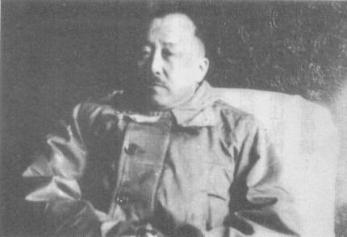
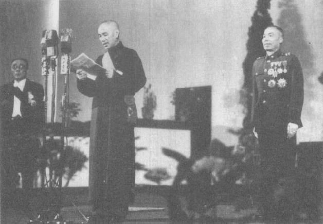
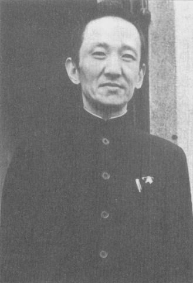
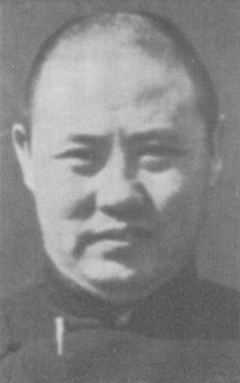
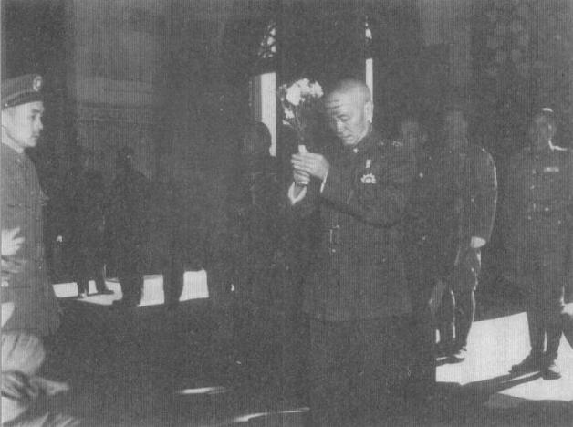
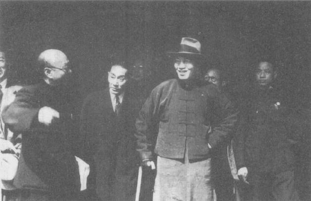

|
前一页 后一页 回目录 回主页 |
第九章：大失败 杜聿明打败林彪的光辉犹未消褪，又旧疾重发。7月初，李宗仁婉拒总揽东北军符，蒋遂命令陈诚取代杜聿明①。陈诚于8月29日出任东北行辕主任，总揽政治、军事、经济一切事务。现在统领14个兵团的陈诚，说服蒋把政府军兵力增加到50万人左右。另外他更换许多髙级军官，以及所有的省党部主委；这场人事更动反映他相信贪渎、无能无所不在。他逮捕了若干军官和国民党党务人员，还把一些人“遣返”南京②。司徒雷登大使的报告指出，陈诚的改革“对政治、军事士气有极佳效果”。但是，他又说，共军第6波攻势预料等道路一乾、不再泥泞时就会发动，这些改革会有足够时间挽住颓势吗？他很怀疑③。 ① Te-kong Tong（唐德刚）and Li Tsung-jen （Li Congren，李宗仁），The Memoirs of Li Tusng-jen (Boulder, Colo.: Westview, 1979), p.453. ② 杜聿明，《辽沈战役概述》，《辽沈战役亲历记：原国民党将领的回忆》（北京：文史资料出版社，1985），pp.1-3；E.R.Hootern, The Greatest Tumult: The Chinese Civil War, 1936-1949 (London: Brassey's, 1991), p.92; Edward L.Dreyer, China at War (New York: Longman, 1995), p.331. ③ John, Leighton Stuart, The Forgotten Ambassador: The Reports of John Leighton Stuart, ed. Kenneth W.Rea and John C.Brewer (Boulder, Colo.: Westview, 1981), p.144. 共军在东北的军事兵力占有优势，他们控制了约90％的乡村地区。他们有苏联的支持，加上在华北的布建实力坚强，在在凸显蒋决定投入更多兵力到东北，是个巨大、不合理、根本就是疯狂的豪赌。除了士气低落及其他劣势外，他在东北的美式配备部队几乎不可能有弹药、零件或更新备品的来源，以补充他们的美式武器和设备，然而他们的库存已低得很危险。从一则日记或许可窥见他的想法。他写说，失去了东北，山东的海港很快就会沦陷，整个华北也将听任大敌长驱直入。蒋的意思似乎是说，不论是退出东北，或者在此全面作战失败，他都终将失去整个中国①。 ① 蒋给熊式辉的电报。秦孝仪，《大事长编》卷六，1947年8月5日，p.3281。 蒋对其军官和国民党党工持续的鄙视，使他对国共斗争长期的结果，从偶尔的悲观进展为全面的悲观心态。中央执行委员会在9月9日临时召开的全员大会中，委员长再次告诉党内同志，共产党的表现证明他们已是“更能干、更专心致志”的革命党。他说：“国民党的改革和换血，已注定失败。”①在其他的场合，他指控高级军官侵占拨给部队的谷物和金钱，并表示钦佩共产党人的纪律和道德。就和1947年初以来的长篇大论一样，这些批评对他想改造军官行为的本意，可能又帮了倒忙。 ① White Paper, pp.261-262. 同时，在华府方面，压制魏德迈的报告引发猜疑和反弹。国务院在高涨的政治压力下，于10月间订出一套对华经济援助的新方案。马歇尔向参议院报告，这项计划估计每月需2500万美元左右、一年约需3亿美元，但是钱什么时候会有，却不确定。华府同时批准驻华美军顾问团新任团长巴大维（David Barr）少将“在非正式、保密的基础上，提供建议给委员长”，也同意中国可以从美国在太平洋的补给中购买弹药①。 ① 同上注，pp.324，348，371-377。 10月2日，共军将领林彪发动针对东北国军的第6波攻势。陈诚只有4个星期去执行他的军事、政治改革，而且他的部队只有约30万人，不是他所规划的50万。这次，林彪不和国军据守的城市正面对决，而是集中力量扰乱铁路线以及连结城市的道路，攻打中小型驻防并囤积秋收谷粮。 此时，5、6个师的国军援兵抵达黄海边的秦皇岛——刚好在长城东端的关内。由于铁路线阻绝的情形更胜以往，国军部队越来越仰赖空运。二度退役的陈纳德将军也回到中国成立一家商业航空“民航空运公司”（Civil Air Transport）。沈阳和东北其他由政府控制的城市，多是由他的机队载送日常用品①。 ① Dreyer, China at War, p.93; 秦孝仪，《大事长编》卷六，1947年10月2日，p.3316。 大风雪提早横扫东北，林彪又率众退回松花江以北整训。他的部队造成国军伤亡68000千人，但本身的伤亡恐怕更甚——大部分死于空袭。不过，林彪的部队兵力继续增加，到了年底已逾50万人。同时，华北方面，解放军继续控制山东和河北（除了大城市和若干铁路线之外），它也在华中打开全新的战场，威胁到南京甚至武汉①。11月初蒋接获报告，他的士兵现在平均每人只有180发子弹，每日粮食也不足。他在日记写下：“未知前途如何结尾矣。”② ① Suzanne Pepper（胡素珊），"The KMT-CCP Conflict, 1945-1949: The Nationalist Era in China," in Lloyd Eastman（易劳逸），ed., The Nationalist Era in China (Cambridge, Eng.: Cambridge University Press, 1991), pp.340-341; Hooten, Greatest Tumult, p.94. ② Chiang Diaries, Hoover, November 10, 1947, box 46, folder 14. 11月的某一天，委员长坐一辆黑色轿车前往北平机场。胡同巷弄间刮起寒冽的北风，街上行人无不以围巾或口罩护脸，拘偻而行。当座车经过西门时，有一声枪响。委员长听到“当”的一声，子弹穿透汽车侧身，离他头顶不远。他的副手孙连仲将军从汽车跳下来，逮住嫌疑刺客。司徒雷登大使获悉，刺客是前第九十四军军长牟庭芳的部属；牟因涉嫌贪渎罪被蒋送交军法审判。当司徒12月2日晚上见到委员长时，蒋不曾如此“深陷情绪低潮”，但只字不提有人企图杀害他的事①。 ① Stuart, Forgotten Ambassador, p.157. 和蒋见过面后，司徒再次敦促华府批准提供紧急军援给士气低落、迭遭打击的国军。他认为，华府提任何条件，委员长几乎统统都会答应①。12月，蒋的政治部主任张治中和蒋经国分别力促苏联驻南京大使馆协助达成国共和解②。副主席孙科公开提出警告说，如果美国不提供主要援助，南京政府将倒向苏联怀抱。蒋或许把这些当作向美国施压的战术，但是诚如司徒所报告，共产党显然“在每方面都获胜了”，要他们接受真正的和谈似乎“不可能”③。 ① 同上注，p.154。 ② 1947年12月19日，美国大使馆南京电报，FRUS(1947), vol.7: The Far East, China, p.411. ③ 同上注。 即使长江以南省分也进入危急状况。广东、广西、湖南、河南（原文如此）、浙江和福建等省，地下共党分子的活动日益活跃。毛泽东在12月25日预言，“美帝走狗”蒋介石的崩溃已迫在眉睫，“世界反帝阵营的力量现在已超过帝国主义阵营的力量”①。 ① 毛泽东，《毛泽东选集》（北京：外文出版社，1961），p.172。 尽管在共产党的秋季攻势中吃亏，陈诚在1948年元旦宣布，中央军已完成作战准备，东北危机已经过去。这是令人不胜错愕的声明。此时，兵员大不如人的陈诚东北军只占领约2％、3％的地区，且共产党军队在武器和训练方面正迎头赶上。解放军的主要弱点就是完全没有空中力量，但是它的司令官们晓得如何发挥长处。当极地般的天气和浓雾让陈诚的飞机一天只能发动12次空袭，林彪趁陈诚还未能出兵前，让部队跨越冰封的松花江，发动全面总攻击①。这位共军将领一方面包围四平街，40万大军大部分兵力都送至沈阳以南以及长春。曾经在缅甸作战的国军菁英新五军撤离沈阳时，但被两个纵队的解放军包围，以致两师国军被歼灭②。 ① Hooten, Greatest Tumult, pp.94-95. ② 杜聿明，《辽沈战役概述》，p.5-6。 陈诚起先责怪两名指挥官没有前去解救新五军。可是，被责怪的将领说服蒋表示他们根本没接到命令，蒋认定疏失出在陈诚总部。蒋允许陈诚调回南京，然后说服卫立煌接管东北军事。卫立煌曾在第二次缅甸战役指挥5个军在东线作战告捷。他坚持要对东北党、政、军三者拥有全权，蒋同意了。

蒋甚至另派10万名部队弥补陈诚作战失利所折损的兵力做为酬赏，也答应要送更多补给到东北，而且未来会有更多援军①。接替陈诚的卫立煌，兵困沈阳 ① 同上注，pp.5-9；Chiang Diaries, Hoover, January 11 and 12, 1948, box 41, folder 17. 可是，共产党继续在冬季攻势取得上风，共军占领沈阳周遭地区，又摧毁了国军2个师。卫立煌1月22日到达沈阳发现他欠缺足够的补给和后备力量，遂采取全面守势。一周之后，林彪切断通往沈阳西南方锦州市的铁路线，并且猛攻沿线各地防戍，再横扫了国军3个师①。同时，学生攻击上海市长、工厂工人发动罢工，甚至妓女也走上街头示威。蒋在1948年2月3日的日记写下：“近日军心民心动摇已极，无人无地无不表现其失败主义之情绪。”② ① Dreyer, China at War, p.330; Hooten, Greatest Tumult, p.96. ② Chiang Diaries, Hoover, February 3, 1948, box 46, folder 18. 2天之后，卫立煌报告，他只剩下约10天的“后勤供应品”，“如果部队要坚守到4月底”，需要2000亿元法币购买足够的粮食①。但是国民政府本身自此刻起既缺兵、也缺粮草武器。蒋原先的直觉和常识告诉他东北是个大陷阱，可是这一年来他一再违反此一认识，在迭遭惨重伤亡后不断投入精锐部队。这个怪决策似乎源于蒋的一个信念，意即要是东北军事失守的话，中国大陆其他地区的失败也将不可避免——因此，没有必要节省兵力只为了在关内某地划界坚守。 ① 卫立煌的报告，秦孝仪，《大事长编》卷七，1948年2月5日，pp.3381，3382。 蒋也担心从东北有秩序撤退的时机已经过去了（虽然事实并不然）。总而言之，他告诉卫立煌把部队撤出沈阳和长春，向东南撤退到海边的锦州，并沿途打通铁路线①。但是卫立煌不肯，担心撤退途中会遭到伏击、惨遭屠杀；他表示不愿丢下身陷在长春的12万2千人②。他也说，他需要器械空运到沈阳以供应其部队的休养、整训，然后才能出发。解放军现在包围了沈阳周边，也占领通往锦州的铁路线。此外，卫立煌也说，从沈阳出来的路已在融雪，直到4月之前都会非常泥泞，河川结冰的程度也不再足以随意跨越③。 ① 杜聿明，《辽沈战役概述》，p.9。据杜聿明说，蒋下令除了2月派去的后卫各师之外，全面撤退；之后又重复这个命令。 ② 同上注，p.8；秦孝仪，《大事长编》卷七，1948年2月24日，p.3395。 ③ 秦孝仪，《大事长编》卷七，1948年2月28日，pp.3397-3398；杜聿明，《辽沈战役概述》，p.9。 情势十分怪异，在时间尚可允许的情况下，蒋不知是不能还是不愿，总之他在接下来的几个月都没逼卫立煌执行其撤退令①。巴大维将军就东北变局致国防部的1949年总结报告，强调“委员长早在前一个冬天（1948年初）已指示卫立煌将军准备计划，并预备部队在5月初发动攻击，以打通一段沈阳到锦州的走道——国军负责作战的参三已六度到沈阳观察，督促守军为突围做准备”②。 ① 杜聿明，《辽沈战役概述》，p.9。 ② White Paper, p.329. 虽然他在一个星期前告诉卫立煌，“调东北最精锐到锦州”，蒋3月1日写下该是时候“对东北做最后决定了”。秦孝仪，《大事长编》卷七，1948年3月1日，p.3399。想必蒋指的是全面退出东北，包括从锦州撤退到长城以南。 从1月底到2月初，上海发生3起社会动乱，最后爆发群众暴力事件。与此同时，城市经济几乎就要停摆。尽管去年才推动经济改革，法币兑换价值已从1945年8月的1500元法币兑换1美元，巨幅降到1948年1月的18万元法币兑换1美元。对外贸易已几乎停摆。司徒雷登观察发现民间已意识到国民政府快要撑不下去了。美、英驻华使馆都劝其国民离开华北。此大洪水将至，人人都想起码再抓住点什么，贪腐一发不可收拾。1948年1月的《远东经济评论》从香港报导，归纳中国各地的绝望情境： 最近几个月以来，你不得不吃惊的是，连国民政府统治中最不可能的那些人，都非常明确地对共产党的目标和纲领表示同情。这样的同情心理有些甚至来自保守的中国商人，他们过去对苏联或社会主义可说全无好感，这些人在1945年仍是国民政府的死忠支持者，但是现在却感觉在中共清廉的集权统治下生活，相较之下，不会比国民党无能的贪污统治差。 同时在华府方面，继杜鲁门政府承诺援助之后，国会终于通过4亿6千3百万美元的经济援助，另有1亿美元可让中国用于军事用途。针对战场需要多少补给品的报告，说法互有矛盾。巴大维将军报告说：“自从我到任以来，不曾发生过因欠缺弹药或器械而战败的事。”司徒雷登则说在大部分战区，物资的短缺已削弱政府防卫①。由新美援采购的第一批军事补给品迟至1948年11月才抵达，距马歇尔告知国会有此援助方案已过了1年；这一切都为时已晚，无法在东北保卫战发挥作用②。 ① Stuart, Forgotten Ambassador, p.189. ② Odd Arne Westad（文安立），Decisive Encounters (Stanford, Calif.: Stanford University Press, 2003), p.186; FEER 4, no.13 (March 31, 1948): 304. 可是，稍早的时候，美国提供20架C-46运输机、100万发机关枪子弹，以及价值4500万美元的谷物，做为应急措施。 现在中共在中国各地接二连三告捷。位于太原与西安之间的宜川失陷，山西折损了1/3的政府军。甘肃东部和大西北现在告急，共军颇有可能直叩四川。蒋夫人告诉司徒雷登，共军已歼灭国军16个师，其中多数为美式装备军①。蒋再次下令沈阳守军出击，打通到海边的铁路线，但是卫立煌坚持在率部进到辽阔的乡村地区之前，他必须获得大量援军，以及更多时间使部队休养生息和重新编组。如果他的精锐部队出击锦州，他确信他们必会遭到共军伏袭、歼灭。蒋于是派一位新的副司令官到卫的总部，并衔命要求卫立煌不论多么危险都必须派其精锐士兵出沈阳城，集中力量确保夺下沈阳、锦州之间的铁路线②。卫并未从命，反而在3月31日飞往南京见委员长，继续争辩不已，蒋不能或不愿解除卫立煌职务。 ① Stuart, Forgotten Mabassador, p.200. ② 杜聿明，《辽沈战役概述》，p.9。虽然巴大维将军（General Barr）晓得蒋下令卫立煌将主力部队退至锦州，他报告说，蒋一度告诉他“基于政治考量，派出弃守满洲旧都长春”。蒋的日记和卫立煌、杜聿明等人的回忆录，都证实蒋此时已确切决定全面撤退。（见White Paper, pp.325-326）。 敌军的损失可能大于政府军，但是解放军似乎不愁没有补充兵员，而且虏获的美制武器越来越多，足够装备好几个师。这时候政府在东北只控制1％的面积，在长江以北的中国本土也只控制15％的土地。蒋再次感叹政府欠缺具备拯救当下颓势特质的武官，写下：“然而今日竟无一人也，奈何。”① ① Chiang Diaries, Hoover, March 25, 1948, box 46, folder 19. 新选出来的国民大会代表于3月29日开议，但是议事并不顺利。有120名忠诚的国民党员，因不顾党禁、违纪竞选，因以“无党无派”身分当选而遭党部开除党籍。在总数2908名的国大代表中，有些人对此处分相当愤怒①。蒋发表主题演讲，旨在强调“我国民主宪政史的开端”②。若从他演讲的要点去看，你根本不会料想到国民大会、政府和庞大的国军全都面临毁灭的命运。 ① Chen Lifu（陈立夫），The Storm Clouds Clear over China (Stanford, Calif.: Hoover Institution Press, 1994), pp.198-200; Stuart, Forgotten Ambassador, pp.164-165. ② 蒋介石在国民大会的演讲，秦孝仪，《大事长编》卷七，1948年3月29日，pp.3416-3420。

国民大会推选蒋介石为中华民国行宪后第一任总统。然后，虽然蒋不鼓励他竞选，但在一场大逆转中，国大代表却推举李宗仁为副总统。此举形同对委员长的严重反弹，蒋因之情绪十分激动，当晚不能成眠，据传必须罕见地喝点威士忌才能入睡①。李宗仁的窜起鼓舞了党内许多希望领导权易主的人士；选举过后，蒋从不曾邀李参加任何重要会议②。蒋介石、李宗仁1948年在国府大礼堂就任行宪后首任总统、副总统 ① Time（《时代》）, January 6, 1948. ② Te-kong Tong（唐德刚）and Li Tsung-jen（李宗仁），Memoirs, p.465. 国民大会召开前一星期，蒋和司徒雷登有一次不寻常的坦诚对话。蒋承认他应该听从马歇尔的评估：政府军没办法从军事上击败共产党。但是他相信他已证明自己的想法正确无误，意即和共产党是不可能妥协或合作的。蒋告诉颇为同情他的司徒雷登，他“真的希望改革，但是不知如何着手。”这场对话更证实了司徒长期以来的观点，他认为蒋只需要好的建言以及许多物质援助，就可扭转局势①。 ① Stuart, Forgotten Ambassador, pp.193-194. 5月初，美军顾问团团长巴大维将军在紫金山官邸的一场会议中建议说，如果国军近期内仍不能由沈阳出击，政府就应趁早弃守沈阳。可是，卫立煌依然坚持撤退太过冒险。巴大维十分讶异卫立煌一再拒绝委员长的直接命令，竟然还能保住官位，但是蒋再度同意再延一延①。到了仲夏季节，东北平原已经变干了，可是就补给和士气而言，卫的前景更加黯淡。他的一个优势——战术空中力量——已因缺乏替补飞机和汽油而萎缩。蒋试图另找将领换下卫立煌，可是没有一个高阶将领肯接这个位子。卫立煌就这样带着15万至20万大军困守沈阳，另有10万大军困在长春，而他们都是政府仅存部队中的精锐士兵②。 ① White Paper, pp.327-329. ② 杜聿明，《辽沈战役概述》，pp.12-13。 7月19日，卫立煌再次飞回南京，和委员长进行另一番重要会议。令大家意外的是，卫现在表示他的部队休息够了，士气也相当高昂。他有信心可以守住沈阳，但若是依从蒋的方案撤离沈阳，会使士气再受打击。他还说，由于撤退有可能失败，留守沈阳反而较为保险。最后，委员长同意让卫在沈阳再守3个月，准备好在11月进行攻势撤离。多年之后，蒋说他未能早点退回关内，是因为“将领反对、民意、政治、经济、社会、与外交影响，尤其是东北与华北之民意代表请愿与哭诉，更使无法实行”①。 ① 秦孝仪，《大事长编》卷十，1951年8月7日，pp.4784-4785。 当秋意降临东北的南部，林彪也预备发动中共有史以来最大的攻势——辽沈会战。他的70万大军重燃斗志、蓄势待发，某些师更以虏获的美制武器训练整备。根据拦截的讯息、以及其他情报资讯，林彪必然明白蒋有意把国军精锐部队移防到锦州以南，接近必要时用以撤退的主要港口葫芦岛。林彪的大胆计划是绕过沈阳，先攻占锦州，藉此将国军部队困在东北，进退不得。美国即将举行总统大选，这使国共双方有特别诱因去争取东北的胜利。苏联方面加强了它对中共的非正式援助，帮助重建跨越松花江的铁路①。 ① Sergei N.Goncharov, John W.Lewis, and Xue Litai（薛理泰）, Unceratain Partners: Stalin, Mao, and the Korean War (Stanford, Calif.: Stanford University Press, 1993), p.25. 9月12日，解放军攻击沈阳周围及往南至锦州的铁路沿线据点。同时，23个解放军的师级部队、总数近30万人，以出奇的速度把锦州团团围住。困在锦州城里的是由国军第六军范汉杰所部11万8千人；他们有一半是云南人，弹药短少，无心在严冬围城下恋战①。巴大维和蒋介石都认为，有必要让卫立煌命令郑洞国的第一军6个师从长春突围前往海岸边，还要令沈阳的21个师弃城，转往攻击威胁锦州的共军。早先，蒋曾说应留1个军和1个师固守沈阳。现在他已决定彻底放弃沈阳，集中起东北所有的国军兵力以及华北调来的大军，在锦州进行决战。卫立煌终于同意派廖耀湘率领9万人的“西进兵团”出城，但强调他需要时间准备大反攻。 ① Hooten, Greatest Tumult, p.99. 蒋飞到北平见华北剿匪总司令傅作义①。会谈中，蒋非常悲观，认为唯有美、苏爆发大战，才能挽救大局。傅对委员长已无信心，但那时仍同意派1个军又1个师，参加锦州之役②。蒋接着飞往沈阳，从空中望向东北大平原——数十万共军已散布在褐黄色的麦田里。蒋召集卫立煌及其属下将校讲话，要求他们在即将爆发的决战中合作——“否则，我们来生再见。”③可是，蒋的整体态度似乎（或假装）很乐观，他向北平的部属担保，配合空中武力和华北援军，决战的胜利可期④。他计划政府军两支进击部队从两个方向会师，夹击林彪的23个师，同时让锦州守军也发动反攻⑤。华府在 蒋紧急求援下，终于同意从日本紧急送来3万桶的航空燃油；蒋向两支进击部队指挥官保证，他们将得到更多的空中支援⑥。 ① 杜聿明，《辽沈战役概述》，p.15。 ② 同上注。 ③ 同上注，p.16。 ④ 同上注，p.14。 ⑤ "General Barr's Report," in White Paper, p.333. ⑥ 秦孝仪，《大事长编》卷七，1948年10月5日，p.3496。 为了缓阻法币快速贬值的颓势，蒋政府试图把工资锁定，和生活物价连动，冻结物价和工资，并实施工业物资和消费品配给，结果统统不管用。1948年6月，1袋米售价670万元，8月间已窜升到6300万元①。当月，政府宣布推出新货币“金圆券”，并下令百姓除了老法币之外，凡持有金块、银块一律都要交出来。兑换率是300万元法币换1元金圆券。政府宣布金圆券发行量不会超过20亿元；禁止提高工资和物价，也不准罢工和示威游行。 ① Jonathan Spence（史景迁），The Search for Modern China (New York: W.W.Norton, 1990), pp.501-502. 蒋命令儿子蒋经国到上海地区执行此一改革。蒋经国控制本市6个以上的警察、情报机关，强力取缔投机商人和囤积居奇者，包括著名的商人或与青帮有关系的人，一概不卖人情。他以非法走私外币和黄金赴香港之罪名，逮捕财政部钱币司驻沪主管，以及许多高级官员。不久后，上海各银行交出大量的外币和黄金准备。蒋经国一再谴责富人的巧取豪夺，因而在上海声望日隆。他强调国民党是社会革命党，他不仅要扫除经济犯罪，还要终结财富分配的不公①。 ① 蒋经国演讲词，见上海市档案馆，file Q6-7-90，n.d. 蒋经国的雷厉风行，使金圆券在上海稳定流通了几个星期。被他逮捕的人包括杜月笙的儿子；付出大量罚款之后，他获准关掉公司，到香港追随已经迁地为良的老爸。杜离境之前，交给蒋经国一份孔令侃拥有的公司名单，这些公司非法囤积商品。孔令侃是蒋夫人大姐宋蔼龄和孔祥熙的儿子。蒋经国下令软禁令侃，但宋美龄立刻赶到上海，和这对表兄弟碰面。她告诉他们：“你们是手足，不应该彼此互打。”①她接着急电委员长。蒋虽正在北平召开辽沈会战前夕的重要军事会议，但他却放下一切飞到上海，解决此一家庭冲突。傅作义不禁评说：“蒋介石爱美人，大过爱江山。”②经过一番交涉，据说孔令侃交出600万美元给政府，然后飞往香港③。不久之后，他飞到纽约与一年前就离开中国的父母亲会合。 ① 1995年10月2日，蒋经国的同事陈至京（Chen Zhijing，音译），在上海受访。 ② 杜聿明，《辽沈战役概述》，p.17。 ③ American Consulate General Hong Kong, dispatch no.45, September 25, 1948, National Archives, RG 59, General Records of the Department of State, decimal file 1945-1949, box 7275. 一 10月9日，卫立煌命令廖耀湘率西进部队突破解放军对沈阳之包围线，沿铁路直奔锦州。突围杀出沈阳的国军只有11个师，不是蒋下令的15个师；卫立煌又一次没遵守上级的命令①。不过，卫立煌倒是执行了蒋的另一道指令，派五十二兵团奇袭出沈阳，打通通往营口的铁路——营口位于渤海湾北端，距锦州东方海岸约60英里处。10月11日，国军光复这个重要港口②。 ① "General Barr's Report," p.335. ② 谷振寰（一三〇师参谋长），《五十三路军在东北》，《辽沈战役亲历记：原国民党将领的回忆》（北京：文史资料出版社，1985），pp.600-602。 10月12日，当廖耀湘的西进部队与共军12个师激烈交战时，蒋命令葫芦岛国军立刻北上，攻击包围锦州的解放军部队。可是，解放军在距锦州40公里处挡下这支国军；西进部队也仍在半路上①。这时解放军工兵已在锦州城墙炸开大洞，守军更加吃紧。 ① Chiang Diaries, Hoover, October 10, 1948, box 47, folder 5. 蒋告诉国军将领说：“这是东北整体军事情势的生死关头。”无计可施之下，他把手上一切资源投入这场他依然认为能够决定东北命运、甚至国共内战胜负的战役。他下令更多部队从华北驰援锦州，但已太迟。10月15日，锦州守军投降时，蒋回到残破的沈阳城内。锦州12万2千名守军之中，有34000人于交战中阵亡。解放军押走88000名战俘①。 ① Chiang Diaries, Hoover, October 10-16, 1948, box 47, folder 5; Hooten, Greatest Tumult, p.100; 杜聿明，《辽沈战役概述》，pp.17-20。 仍在锦州和沈阳之间的廖耀湘，听到锦州失陷之后，想要率领他的11个师的西进部队到营口、上船撤出东北①。10月19日，蒋在北平和杜聿明、卫立煌、傅作义等将领会商。蒋要继续作战，以夺回锦州。杜聿明支持廖退到营口的主张，傅作义则没有意见②。杜聿明在他的回忆录中记载，蒋突然大怒，从椅子上跳起来大骂：“都是马歇尔这个老美，搞得我全盘尽输。”他说，1945年他本来打算只占领锦州以南的一小部分东北，可是马歇尔的言行鼓励他把精锐部队深入东北。眼前这场败战就是后果③。 ① 廖耀湘，《辽西战役纪实》，《辽沈战役亲历记：原国民党将领的回忆》（北京：文史资料出版社，1985），p.174。 ② 杜聿明，辽沈战役概述，p.19。 ③ 同上注，p.24。杜聿明回忆1945年的事件时，肯定蒋原先的计划如同他所说。 蒋不久就醒悟单凭廖耀湘部队不足以拿下锦州，终于批准他退往营口以待乘船撤出东北。可是，此时林彪另外送出24师的急行军赶来对战国军。廖心知自己寡不敌众，设法掉头退往沈阳，但是在桃河被拦截。经过1天的激烈战斗，这只庞大的政府军崩溃，兵士跟着数千匹马往大平原的四处窜逃。廖耀湘等一干高级将领被俘，共军另外虏获38000名战俘、22辆坦克、150门大炮、600辆汽车和6000匹马①。廖的兵团是蒋自认手上仅存最精锐的雄师，全都毁于这一役。按照蒋自己的估计，共有70000人阵亡和被俘②。 ① 廖耀湘，《辽西战役纪实》，p.174； Hooten, Greatest Tumult, pp.101-102. ② Chiang Diaries, Hoover, October 30, 1948, box 47, folder 5. 听到廖耀湘战败的消息，长春8万守军很快便投降。但卫立煌仍坚持力守沈阳，甚至要求再派10个师增援。10月30日，解放军攻破城墙，进入沈阳东城。近身肉搏打得如火如荼之际，卫立煌与一些幕僚从重重包围的机场夺机逃命。11月1日，国军残将前往机场迎会解放军，正式投降。11月9日，政府船只从葫芦岛撤出14万名部队和大批器械①。东北争夺战落幕。 ① Levine, Anvil of Victory, p.136. 蒋解除卫立煌一切职务，将他软禁在南京等候军法侦审，要他说明为何抗命直至未能及时率领部队撤离沈阳。多年前蒋就接获报告，指卫立煌与中共暗通款曲，却不以为意。现在，南京盛传卫被共产党唆使、破坏国军之撤退。事实上，卫立煌1955年自香港返回北平，参加了中华人民共和国各种组织的活动①。不论卫的叛国程度多大，他把撤退延误了好几个月，造成国军折损30万大军。其中的24万6千人被俘，许多人很快就被编入解放军。他们的下一场战役将会是韩战②。事后，蒋责怪自己和别人没在尚能保全大部分国军之前退出东北，但他从未解释为何没把卫解职。他指控卫在最后关头懦弱逃生，但没责怪他溃败，也没提他叛国的可能性，或许是因为蒋先忽视了有人针对卫所发出的警讯吧③。 ① Boorman, Biographical Dictionary, vol.3, p.406. ② 秦孝仪，《大事长编》卷七，1948年11月10日，p.3526。 ③ 秦孝仪，《大事长编》卷十，1951年8月7日，pp.4814-4816。 蒋氏夫妇曾经赞助在南京盖一座崭新的基督教教堂，赞助的资金其实是来自宋美龄。东北惨败之后某个星期天早晨，蒋氏夫妇率同经国、纬国前往做礼拜。蒋自己做了一段小小的布道，他引用《历代志》，并下评语道：“至于我，我想要替约柜造一个休憩的宫殿，但是主对我说，你不用以我之名建造宫殿，因为你是一个战争之人。”蒋说这段话的教训就是：“谋事在人，成事在天。”① ① Time（《时代》）, January 6, 1948. 美国国务院1949年发表的《中美关系白皮书》宣称，蒋政府“于占领东北时，采取违反美国军事观察员建议的措施，这些观察员了解到政府不能既要重新占领东北，又要绥靖华北”①。这个说法是讨论国共内战时一个极重要但未经检讨、大谬不然的陈述②。魏德迈曾在1945年11月告诉过蒋和五角大厦，国民政府无法在东北得胜，或许连华北也赢不了；但是华府的决策者不采纳此一观点。此外同年更早时，魏德迈曾对国军在战后对付共产党（包括在东北）的前景，表示乐观。自1945年夏天中苏双方在莫斯科谈判条约起，美国就明白表示希望蒋对国民政府在东北的主权持强硬立场。日本投降后，美国即准备好替国府运送近25万部队到东北要恢复主权，并于马歇尔使华调处期间完成此一任务。调处之初，杜鲁门和马歇尔坚定（虽然未公开）的政策目标是，支持蒋接收整个东北，同时试图防止国共爆发内战。为了达成此一目标，美国想方设法推动国共合组联合政府，但是没有把联合政府当做美国援蒋的补偿。马歇尔起初很明白鼓励蒋，要继续尝试在整个东北伸张权力。马歇尔原本的和平计划，是让国军在东北对共军享有14比1的极优势地位，并且让政府有权在东北任何地方调遣、部署军队，以树立其主导权。马歇尔甚至答应要替北上的国军找冬衣。诚如稍早所说，早在1945年11月中旬，蒋就决定暂时从东北撤军，但是苏联的正面动作以及马歇尔的初期动作和声明，都使他改变主意。 ① White Paper, p.321. ② 我曾在拙作讨论此一假设，见The Generalissimo's Son (Cambridge: Harvard University Press, 2000). 直到1946年春天，马歇尔才告诉蒋，他在东北赢不了共产党，但是即使到那时候，他依然认为组成联合政府是可能的，因此并未力促国军撤出东北。马歇尔抵华调处之前，蒋介石对苏联在东北是否肯合作，仍持较悲观的看法，因此对自己在东北的前景也不看好，假若马歇尔和蒋初次会谈就强烈赞同魏德迈的建言，说不定蒋就会退出东北了。 如果马歇尔如此建言、蒋也同意，美国就有责任协助国民政府在关内划界区分彼此，并主张、维持其控制区，这么一来美国就会被卷入国共纠纷；究竟是只有共产党的一个中国、还是有两个中国呢？若是两个中国，要在哪里划线分治？杜鲁门和马歇尔大概都没有想得太深入，他们只想两头得利——也就是说，既想要避免介入国共内战，又想要维持一个非共、非苏的中国做其盟国，而且这个中国还要包括东北。因此，美国人幻想的最美好结局是：毛泽东不仅放弃他的革命意识形态、强大的军队、广大的领土和民众基础，还抛弃与中国为邻的超强国给他的支持，只为了要在蒋介石领导下真正融合的大军和民主政府中当个小伙伴。 马歇尔抵华之后不消几个星期，蒋就开始担心美方会走上姑息共产党的路子，而他大可轻易放弃争夺东北。然而，国军1946年的捷报大大地误导蒋，导致他认为国军可以守住南半部的东北，因此接下来近2年时间，他一再投入更多兵力；甚至在1947年初，当他再次认识到胜算渺茫时仍未改变做法。在1948年9月到10月底的辽沈会战关键期间，蒋照常发下详细指令给前敌指挥官，经常使得他的高级将领很难再对下属下达战术、战略命令。但是，据巴大维将军的说法，“尽管此程序非正统”，但1948年秋天辽沈大战时蒋所做的计划、所下的命令“仍合理健全”。这位美国将军的结论是，如果这些计划和命令都能被遵行，“结果可能是好的”①。鉴于中共在苏联协助下于东北已建立的强大地位，以及国民政府内部财政拮据、士气涣散，巴大维此一评估似乎不太站得住脚。但是它可以替下列主张增添分量：即使蒋迟至1948年春天才从东北撤退，他或许仍有足够实力在黄河或长江守住阵脚！虽然仍需借重美国大规模军事及经济援助。 ① White Paper, p.333. 1948年10月29日，蒋向一位美国记者说明，在他看来，政府领导人若是不战即放弃大城市是可耻的行为，结果“3年以来国军处处设防，备多力分”。他又说，中国得要靠自己保卫东北。蒋对此役万一战败的后果评估，颇有先见之明。他预料，东北若失守“太平洋险恶风云，又将以东北为起点”；如果中国沦入共产党之手，亚洲将成为共党集团的主要区域，“亚洲之前途又以中国为决定点”①。 ① 蒋对谈话的记录，秦孝仪，《大事长编》卷七，1948年10月29日，p.3514。 东北失守，国民政府之败或许也已注定，但国共内战的最惨烈一役还有待开打。沈阳沦陷之后才几天，双方就在华东展开这场决定命运的大战。主要战场在淮河北方（淮河是黄河、长江之间一条东西向流通的大河）。杜聿明率领的45万大军没有撤到长江以南，反而奉蒋之命等候即将来临的大杀戮。林彪的75万大军，武器精良，没停下来休息、整备，就从冰封的东北挺进，进入关内。11月1日夜里，他们进攻、包围天津。政府军工兵炸堤、水淹天津四周运河网，构成严重防阻。解放军并不放手，着手准备抽水。 更南方，陈毅率领的华东军，利用虏获的美、日大炮，在徐州东方约30英里的碾庄，包围了国军10个师。蒋下令政府军驰援，包括受美式训练、装备的第五军及其坦克师（由其养子蒋纬国率领）①。国军向碾庄缓慢前进，解放军在初步交战时将它打退。委员长又祭出静态防卫以及注定无效的救援，而且这次没有诸如提振国家士气或争取国际同情、尊敬，可做为国军必须慷慨赴义的好理由。11月20日共突破碾庄，国军司令官自戕，只有3000人逃出，奔向徐州②。蒋传话给蒋纬国，不能让解放军虏获他的100辆美式M3－A1坦克，蒋纬国先把大部分坦克往南送到南京，然后自己才搭机逃回首都。然后他安排这些坦克以铁路、平台船运到上海，以便撤退到台湾③。 ① Dreyer, China at War, p.338; Hotten, Greatest Tumult, pp.146-148. ② Chiang Diaries, Hoover, November 20, 23, and 27, 1948, box 47, folder 7. ③ 1995年6月10日，蒋纬国在台北受访。 由于收容多次战败的残兵，杜聿明在徐州的政府军总数约有30万人。即使蒋已把大部分坦克调离战场，但是他仍计划展开反攻，目标是使战情反败为胜。他命令十二军由武汉长途跋涉往北投入战场，它却遭到包围。杜聿明奉命率领大军离开徐州，协助十二军突围。 许多知识分子和各种报章杂志呼吁与共产党和谈，可是胡适、吴稚辉和戴季陶却鼓励蒋基于道德和军事立场，要对抗“奸邪万恶的”共产党。但是蒋早已知道在这种情况下，他应该怎么办。他在辽沈会战的最后阶段似乎焦躁不安，但现在表现出来的沉着冷静却使司徒雷登大使相当佩服。司徒认为蒋看来十分有信心，仿佛笼罩着中国和他本人的灾厄有朝一日都会消失，而他将被证明是正确的①。可是，南京城里人人都可感觉到大祸即将临头。11月13日，蒋的长期秘书兼文胆陈布雷（其子媳都是中共党员）自杀身亡，他在留给委员长的遗书表明，最近的所见所闻使他很难再苟活于世②。 ① Stuart, Forgotten Ambassador, p.284. ② 陈布雷的遗书，秦孝仪，《大事长编》卷七，1948年11月13日，p.3528。

11月9日，消息传抵南京，杜鲁门意外击败杜威。蒋拍发贺电给杜鲁门，但也提出警告说，“民主国家或将丧失中国”。他紧急呼吁美国立即给予军事及财务援助，希望美国政府发表声明支持中国政府对抗有苏联撑腰的中国共产党；还要求杜鲁门派一名美国高阶将领到中国考察军事局势，订定军援计划①。毫无疑问地，他并不期望得到正面答复。蒋介石文胆陈布雷于1948年11月13日自杀身亡 ① 1948年11月9日，蒋给杜鲁门的信函，秦孝仪，《大事长编》卷七，p.3524；Dorothy Borg and Waldo Heinrichs, Uncertain Years: Chinese American Relations, 1947-1950 (New York: Columbia University Press, 1980), p.65. 到了这个时候，绝大部分中央军高阶将领已对局势感到绝望。有些将领如何应钦，已准备飞往广州或其他地方，有些则已经前往台湾。行政院会议命令非军事机关迁往重庆和广州两地办公。副总统李宗仁公开主张停火、谈判，明白表示委员长是“唯一的绊脚石”①。在这种战败、绝望的低迷气氛下，蒋仍保持他儒家的镇定。司徒雷登也说蒋出现令人困惑的“自信、沉着”，以及近乎“亢奋的情绪”②。当周的《时代》杂志也登出一则封面故事，描绘“在灾祸集聚的漩涡中”，蒋“愉快、坚定”，在他的私人地图室忙进忙出，接见数十名访客，并以长途电话对前敌指挥官下指导棋③。他晓得下一步要往何处去。 ① 引用秦孝仪，《大事长编》卷六，p.3541；Stuart, Forgotten Ambassador, pp.280, 291-292; Laura Tyson Li, Madame Chiang Kai-shek (New York: Atlantic Monthly Press, 2006), p.297. ② Stuart, Forgotten Ambassador, p.284. ③ Time（《时代》）, January 6, 1948. 马歇尔夫妇曾经表示欢迎宋美龄随时可到他们维吉尼亚州的住所作客；宋美龄和委员长都认为局势危急如斯，她应该尽早出国①。12月1日，她飞往华府，前往医院探视刚动完肾脏摘除手术的马歇尔国务卿。她向马歇尔提出她丈夫向杜鲁门提出的请求，转述蒋表示若有利于国家，他可以下野。宋美龄亦拜会白宫、国务院和国会山庄，要求30亿美元的援助。可是，杜鲁门的经济特使霍夫曼（Paul Hoffman）刚从中国考察回来，不建议再提供国民政府更多经济援助。同一时间，派驻南京的美国军事代表团报告说：“国民政府的军事地位已跌落到无法复原的地步。”蒋当然晓得这种情势，于是告诉宋美龄，她在美国的恳求不会有结果——“且将为人轻侮，不如速归”②。 ① 秦孝仪，《大事长编》卷六，p.3543。 ② White Paper, p.323; 秦孝仪，《大事长编》卷七，1948年12月13日，p.3551。 美国联合参谋本部和麦克阿瑟现在明白，蒋在中国某地守住与中共分治的微小可能性，已不复存在。在华府，这并不是完全不受欢迎的消息；假设国军在长江守住，意谓国会会出现强烈声音，要求美国大规模军事干预。麦克阿瑟提出警告说，苏联的攻势已由欧洲转到远东，但是他对美国应如何处理中国问题仍含糊其辞。不过他也明白表示，任何人主张美国应派地面部队到中国的领土作战，“应该去检査脑袋是否正常”①。即使最亲蒋的共和党人也不主张动用美军部队去拯救国民党。 ① Borg and Heinrichs, Uncertain Years, p.76. 12月14日，解放军包围北平，守将傅作义统辖24万沙场老将，却派人洽降，展开漫长的秘密谈判。傅要求蒋准他辞职，但蒋拒绝了，告诉傅别把胜负看得太严重。他说，输可以给我们教训、使我们更坚强，“亦不为革命历史之羞”①。傅回头继续和毛泽东秘密谈判。太原方面，老军阀阎锡山和10万部队深沟高垒，固守在36公尺厚的城墙里②。 ① Chiang Diaries, Hoover, December 12 and 31, box 47, folder 7. ② Hooten, Greatest Tumult, pp.112, 113, 120.

同样是12月中旬，杜聿明所部仅剩13万人，被包围在安徽、河南交界处。杜的其他兵团还有10万之众被切割成小股兵力、遭到歼灭或投降。出乎意料的是，指挥这个战场的邓小平并没有猛攻杜聿明已被包围的部队；这些国军部队住在帐篷或露宿于零度以下的天候中，靠空投补给存活。委员长要求杜聿明别试图突围南奔长江，而是要往北进攻，进行最后决战。他说，别想避开敌人，要摧毁敌人。他又说，这个攻击将是一举扭转情势使之有利于我的关键①。1948年底在北平遭解放军围城的傅作义向蒋介石辞官不成，与毛泽东展开秘密谈判 ① Chiang Diaries, Hoover, December 6, 1948, box 47, folder 7. 蒋晓得杜聿明部队，甚至傅作义、阎锡山部队的命运已定，但是基于军人的使命，以及退往台湾需要更多准备时间，蒋需要杜“战至最后一兵一卒”。蒋可能也不希望在历史上留下隔江分治中国的骂名。此外，他不肯全面退守长江可能也是因为不想让大军落入副总统李宗仁手中。蒋一旦下台，李必将继位，或许会期待能争取到美援。无论如何，蒋明白排除了在中国大陆某地划界固守的方案。圣诞节时杜聿明报告说，他的部属“吃树皮、草根，为了取暖只好烧房子、衣服和家具”。可是，这13万忠贞部队，只有1万人降敌①。 ① Hooten, Greatest Tumult, p.148; Chiang Diaries, Hoover, December 26, 1948, box 47, folder 7. 白崇喜从武汉行辕致电委员长，指出长江以北军事作战已经全面溃散；他又派出密使，要求蒋下野。副总统李宗仁也提出同样的计划，公开谈论委员长的辞职。自从抗日以来，蒋、白即发展出亲密关系；因此由白提出此议，肯定令蒋愕然。12月31日他在日记写下：“桂白逆谋之毕露，内外几乎皆受其买空卖空虚伪煽惑之影响。”①但是就在同一天晚上，即新年除夕，他发表声明宣称：“对当前国是，能共商合理合法之解决，则中正决无他求，即个人之进退出处，均惟全国人民与全体袍泽之公意是从”②。同时，蒋夫人努力奔走、试图争取美援，却一事无成。蒋承认大陆局势已“成不可收拾之势”，但仍“泰然处之”。在他儒家克己复礼的思绪下，他甚至认为在这场大灾祸能不忧惧，“不可谓修养之无进步也。”也就是说，他变成更好的人了③。 ① Chiang Diaries, Hoover, December 31, 1948, box 47, folder 7. ② New York Times, January 1, 1949. ③ Chiang Diaries, Hoover, December 31, 1948, box 47, folder 7. 至于美国方面的解决方案，司徒雷登现在主张以中共为主成立国共联合政府，他认为中共有“无可争议的进步、改革元素”。此时驻华使馆外交官的观点和他们过去同事的看法截然不同，司徒报告说，他们“真心”认为中国共产党和任何其他国家的共产党，基本上并无不同；中国若出现共产党为主的政府，将会与美国的利益作对①。但是不论是哪个建议，华府都相信美国的干预即便规模再大，终究还是会失败。 ① Stuart, Forgotten Ambassador, p.294. 蒋在年终检讨写下：“各地败战消息如雪片飞来，华北和关内岌岌可危。”得知开封、郑州之间铁路已断，蒋下结论说：“国家已亡。”可是，他仍说自己“须臾不敢放松”。自励即使时局动荡，仍能重建浙江到江西的铁路，以及若干座水坝。他说：“我们必须完成一些东西，不论环境多么恶劣……我不觉有过，我已尽了全力。”①虽然他考虑退守台湾的想法已逾2年多，这一年来也认为退守台湾是最可能的结果，但自从兵败东北，其实退守台湾早已成定局。 ① Chiang Diaries, January 1, 8, and 11, 1949, box 47, folder 7. 即使如此，蒋在新年元旦日记中正式检视他留任的理由，以及他应该下野的理由。留，只有模糊、不确定之得；走，则是因为——“甲，痛恶现在党政军积重难近，非退无法改造，不得整顿；乙，打破半死不活之环境；丙，另起炉灶，重定革命基础。”他告诉白崇喜，任何和平方案一定要中共保障是江以南仍能继续维持中华民国的法理架构和生活方式。他说，为达成此一目的，任何牺牲——包括把你、我当“战犯待戮”，都不碍事。当然，他晓得这情况发生的机率等于零。1月中旬，他已把海、空军总部移到台湾；到了6月，国民政府空军在1月仍剩下的千架左右飞机，已有5/6进驻台湾①。上海及江南若干工厂和兵器厂，也已开始把最好的设备拆卸、运往台湾②。 ① “战犯待戮”，见秦孝仪，《大事长编》卷七，1949年1月11日，p.3581；海、空军总部迁移，见Central Intelligence Agency (CIA), "Probable Developments in China, ORE45-49, June 16, 1949," in Tracking the Dragon: National Intelligence Estimates on China during the Era of Mao, 1948-1976 (Pittsburgh: U.S.Government Printing Office, 2004), p.15; 秦孝仪，《大事长编》卷七，1949年1月4日，p.3571。 ② Stuart, Forgotten Ambassador, pp.297-298. 这些动作根本无从隐瞒，但遵循《孙子兵法》的蒋兵不厌诈，仍需部署欺敌之计。目标是混淆视听，让毛认为固然台湾是蒋最后的避难所，但是他还有其他选择，包括在华南或西南若干地方坚守待变。毛的确担心，一旦蒋下台、李宗仁继位，美国会以大量援助支持新政府，甚至出动战机和部队试图在长江以南维持一个非共的中国。毛焦虑地传话给斯大林，据情报，美国有意动用原子弹和日本部队对付解放军①。斯大林可不担心。透过他的英国间谍菲比（Kim Philby）和其他管道，他颇能掌握英、美对华政策的可能范围——华府方面根本没人提到这样的军事干预，即使最支持委员长的“中国游说团”也没出现这种声音。 ① Michael M.Sheng（盛慕真），Battling Western Imperialism: Mao, Stalin, and the United States (Princeton, N.J.Princeton University Press, 1997), p.164. 从上海往南的大陆各港口已经兵荒马乱。政府官员、商人及其眷属挤上货轮、渡轮、拖船等各式船只，跨越台湾海峡。大批部队带着武器装备也挤在码头候船。台湾的基隆、高雄港塞爆了。委员长下令少帅张学良和爱妾赵一荻也收拾行囊迁到台湾①。许多有钱人则觉得台湾前途未卜，没逃去台湾，而是逃到香港或其他地方（主要是美国）。蒋经国一度考量把太太、小孩送到香港或英国，但是他没有钱，而且不肯接受宋家的援助②。 ① 一位和张学良亲近的华裔美籍友人告诉我这件事。 ② 1996年5月22日，夏功权（蒋介石的飞机驾驶和侍从武官）在台北受访；1996年5月22日，蒋经国的媳妇蒋徐乃锦在台北受访。 蒋经国的青年军干部，现在已以政工人员之姿回到军中复设的政治部工作。他们负责査察、过滤数十万前往台湾的老百姓。蒋经国还有其他特殊任务。1月中旬某天夜里，他持父亲手谕，率领一群武装政工人员带着卡车队来到上海中央银行。蒋经国先去载了央行总裁俞鸿钧，俞恭敬地打开金库，看着士兵把金块、银币、外国钞券一箱箱搬上卡车。不久，海军一艘舰艇载着大笔财物沿黄浦江而下，驶往厦门——不是台湾。这是中国财物运往台湾两船次的第一批。经过厦门再转台湾，是委员长要让毛泽东搞不清他要退守何地的策略之一①。 ① 1996年5月22日，夏功权在台北受访。 1948年底，经国也负责把第一批为数上千的北平故宫博物院藏品，用两艘海军船舰运到台湾。1931年日本占领东北之后，蒋介石下令将19000多箱故宫珍藏，先运到上海、转南京，再溯长江、过三峡而至重庆，藏在四川山区。1946年，它们回到南京，但迄未开箱。1949年1月，经国又督导另外两次运载任务，连同这批藏品的典藏人员一起送到基隆港。总计约有3800箱运到台湾，占全部藏品的22％，不过它们是故宫收藏的精华①。 ① 同上注，参见故宫博物院网站http://www.npm.gov.tw/。 二 1月6日，解放军终于对困守在安徽青龙集、又冷又饿的杜聿明部队发动攻击。杜聿明拍电报给委员长说，他已尽了全力，准备做最后的反攻。他提到因为最近捐了一颗肾给他的兄弟，导致肾脏疼痛。蒋答复说他身边没有其他具备作战经验和斗志的高阶将领可以替换杜①。接下来几天，杜聿明部队在共产党征集民伕所挖的同心圆壕沟中，和共军进行激烈的白刃战。1月9日，杜以电报报告，他的精锐部队已全部摧毁，他和残部只能“战斗到底”。蒋告诉杜，次晨会派一架飞机去接他出来。可是，次日黎明，蒋获悉解放军已犁庭扫穴、围捕杜及其残部。在第二次缅甸之役告捷的这位Y部队名将，证明他英勇、忠诚直到最后一刻：接下来25年，杜的身分都是战俘。由于认为对杜聿明及其部属应负责任，蒋自我安慰，庆幸没有早早下野交出总统大权。他在日记写下：“我问心无愧。”② ① Chiang Diaries, Hoover, January 8, 1949, box 47, folder 9. ② Chiang Diaries, Hoover, January 10, 1949, box 47, folder 9. 1月中旬，毛泽东发表和谈8条件：包括惩处战犯（除了宋庆龄之外，蒋、宋家族统统在列）；废除“伪宪法”；“依据民主原则改编一切反动军队”。换句话说，国民党要无条件投降。若情势反过来，蒋也会有同样的要求。 4天后，蒋主持最后一次会议。当出席人士多数主张停火、和谈时，蒋表示他预备放弃总统职位。1月21日，他非正式地“引退”，交出中华民国总统和三军统帅的权力，但他不是“退休”或“辞职”。副总统李宗仁明白此语意的重要性，因此李只是“代总统”。蒋还留着国民党总裁的身分，还保有多数国民党残存将领的支持。

次晨，蒋再次伏案写下他简短但十分坦诚的分析，检讨一度强大的政府何以溃败。这一次，他没有责怪马歇尔或美国。他说：“此次失败之最大原因，乃在于新制度未能适合现在之国情与需要，而且并未成熟与建立，而旧制度已放弃崩溃，在此新旧交接紧要危急之一刻，而所恃以建国救民之基本条件完全失去。”他再度暗示致命之失是他领导的党、军不团结、分裂、无纪律，还有他本身未能建立一个现代化、有效率的组织。他的结论是“今后立国建军，以确立制度为最重要”①。1949年1月，蒋介石“引退”前谒见南京中山陵 ① Chiang Diaries, Hoover, January 22, 1949, box 47, folder 9. 蒋从来没从国家偷钱，也没有私有的金库。为了支应他迁到台湾之前的开销，他向陈立夫主持的中国农民银行办贷款，借了100万元快速贬值中的金圆券（依那时的官方汇率为1万美元）①。同一天，委员长和长子蒋经国坐一辆黑色大轿车，在维安车队的陪同下前往紫金山。经过20分钟的车程，父子俩来到孙中山陵寝。中山陵的拱门镌刻着很可能是蒋亲选的两个字：“博爱”。下了车，父子俩缓缓走上八段的陡石梯，偶尔佇足休息。他们把保镖留在外头，两人独自走进陵寝，在中国现代革命之父的雕像前，直直站着、低头不语。 ① Brian Crozier（柯如齐），The Man Who Lost China (New York: Charles Scribner's Sons, 1976), p.330. 两蒋和他们的随扈旋即驱车前往南京机场，搭乘“美龄号”专机离开①。他们先停在杭州，与从台北飞来的陈诚会合，也接了住在杭州的蒋方良和四个子女。当天夜里，浙江省主席、执行二二八大屠杀的陈仪设宴款待委员长等一行人。这是一场冷清的筵席。不仅是因为现场没有暖气，更因为两蒋打算不久后就要逮捕、枪毙陈仪——陈涉嫌与中共进行秘密谈判。另一方面，两蒋或许也希望藉由杀陈仪，以缓解台湾人对二二八事件的怨恨。 ① 1996年5月22日，夏功权在台北受访。 次晨，专机从杭州飞到溪口镇附近象山一处机场。一行人抵达镇上时，所有的居民都很紧张。蒋家亲友当然已听过东北军事失利，以及仅有数百英里之隔的徐蚌会战惨败，甚至总统“引退”的消息。许多人很快地收拾行囊。消息传开来：想走的人应该到宁波，等候进一步指示①。 ① 同上注。

翌日，蒋接获报告，傅作义以解救古都不遭兵燹为名义，与解放军达成保有情面的“非投降”协议；傅一直拖到蒋引退才敢公开它①。傅作义手下20多个师和数个炮兵旅被编入解放军，保有原番号和单位的完整。有些将领甚至保住指挥权，至少暂时是如此②。在中共新政府里，傅作义这不战而降的最资深国军将领，先出任水利部长，后转任国防委员会副主任③。蒋介石1949年1月下野后，搭乘专机美龄号回到老家溪口 ① 2002年11月20日，王冀在华盛顿受访。Boorman, Biographical Dictionary, vol.2, p.51. ② Boorman, Biographical Dictionary, vol.2, p.51; Chiang Diaries, Hoover, January 24, 1949, box 47, folder 9. ③ Boorman, Biographical Dictionary, vol.2, p.51. 蒋抵达老家后不久，拍发电报给太太宋美龄，建议她别再在美国发表推销他的言论。他说，他预备“以两三年时间实实在在建党”。事实上他的乐观已近乎幻觉。他写下：“兄以为在此20年之内，无论中国与世界，如要真正和平，兄实为不可或缺之一人，故何必急急求人？”① ① 周宏涛口述，汪士淳著，《蒋公与我》（台北：天下文化，2003），p.90。 1月31日，北平市民在冷冽的北风中，像3年前上街欢迎蒋介石一样，夹道欢迎新的解放者。毛泽东的大肖像取代了紫禁城门上的蒋的肖像。可是，毛没进城，而是在旧夏宫建立总部。他和朱德、周恩来等人在此抽烟、喝茶，讨论蒋委员长的下一个根据地、最适合跨越长江的时机和地点，以及美国是否仍有可能干预等等。当苏共中央政治局委员米高扬（Anastas Mikoyan）到访时，毛表示他要暂缓建立共产党新政府，因为如此才有足够时间清除掉“反革命分子”①。可是，奉斯大林之命令，米高扬坚持中共要尽快进占上海、南京和其他城市，并成立一个革命政府，一个苏联可以公开支持的革命政府②。 ① "Memorandum of A.I.Mikoyan to the Presidium on His January and February Visit to China," doc.P2375, 引用Andrei Ledovsky, "Mikoyan's Secret Mission to China in January and February 1949," Far Eastern Affairs, vol.2: Moscow (1995): 73-93; Goncharov, Lewis, and Xue Litai（薛理泰）, Uncertain Partners, pp.40-44; Sheng（盛慕真）, Battling Western Imperialism, p.166. ② 米高扬（A.I.Mikoyan）给苏联常务委员会的1、2月中国访问备忘录。 根据李宗仁的说法，国军还有350万人，至少半数有武器可作战。共产党至少有200万名战士。但是李缺乏弹药和汽油，华府也坦白告诉他，他们根本不考虑提供更多军事补给及财务协助。2月间在南京举行的一场作战计划会议，汤恩伯一口就拒绝与李宗仁配合，不肯把其所部40万大军调去防守长江；汤坚持集中兵力防卫上海周边。他说，这是蒋介石的计划①。当司徒雷登大使告诉李代总统美国将不援助国民政府之际，满载苏联补给和特种器械的车厢，正沿着已经修复的铁路线定期南下，从苏联边境一路开抵接近长江的车站。 ① 同上注；Te-kong Tong（唐德刚）and Li Tsung-jen（李宗仁）, Memoirs, pp.502-503, 508, 512. 华府人士恐怕比多疑的毛泽东更清楚，委员长在大陆只企图做短暂的防守，好把他信赖的部队和选定的非军事人员及其眷属迁移到台湾。基于麦克阿瑟所推动的战略因素、国内政治的考量，以及美国领导人的道德责任感，美国政府和国会开始觉得，否认台湾属于毛的共产党和蒋的国民党，或许对台湾、美国都是最好的结果。杜鲁门批准了一份秘密的政策文件，宣示这是美方所偏好的结果。艾奇逊在国家安全会议的一次会议中强调，小心隐藏“我们将岛屿（台湾）从大陆的掌控中分离之愿景”是非常重要的。文件指出，交由联合国托管。但是，这份文件的结论表示，要达成台湾非共产化的政策目标，最直接的方法就是小心地推动台湾独立或自治运动①。 ① Borg and Heinrichs, Uncertain Years, p.79; David Finkelstein（冯徳威），Washington's Taiwan Dilemma, 1949-1950 (Fairfax, Va.: George Mason University Press, 1993), p.126. 可是，台湾已经挤满数十万名国民党军人和情治安全人员。这一大批军警特务，加上1947年二二八残暴镇压的阴影，甚至岛屿地理上的隔绝性，都使得台湾人造反成功的可能性极低——中央情报局和美国驻台北总领事克伦兹（Kenneth Krentz）都很清楚。美方最担心的是或许蒋在台湾的将领，会像其大陆的许多同僚那样和共产党达成协议。这份文件没有直接讲出来，不过美方认为在本省人起事之外比较可行的替代方案，是由岛上“自由、有效率”的军事指挥官接管台湾。艾奇逊指派驻南京美国大使馆参事莫成德（Livingston T.Merchant）研究岛上政治情势。莫成德在台湾逗留几天，也没和省主席陈诚接触，就向国务卿呈报说，陈诚无法提供美国人希望的“自由、有效率”的治理。他反而建议华府正式要求李宗仁免掉陈诚的省主席职位，改派孙立人出任省主席。孙此时以陆军副总司令兼陆军训练司令身分在台湾练兵。当司徒雷登大使在南京向李宗仁提出此一建议时，没料到李代总统声称只有蒋介石才能决定此一人事任命案①。 ① Finkelstein（冯徳威），Washington's Taiwan Dilemma, 1949-1950, pp.120-146. 同时，孙立人接到麦克阿瑟的邀请函，请他到东京晤谈。孙立人透过陈诚呈请委员长准他接受邀请。蒋很生气，但不为这位驻日盟军最高统帅没邀请他本人感到意外。他晓得美国政府希望他不要管事。即使如此，他从溪口传讯表示同意，随后麦克阿瑟便派机到台湾接孙立人。孙立人在东京停留3天。有一项报导说，麦克阿瑟告诉孙立人，国民政府已经稳输。据说，麦克阿瑟表示，如果孙负起台湾安全的责任，美国将会支持他。孙答说，他效忠委员长①。 ① 《联合报》（台北，1988年3月22日）。据朱浤源教授说，麦克阿瑟的行事历有这个会议的记录，但是没有记载谈话内容。 后来，孙立人写信给华府一位他所认识的美国官员，提到麦克阿瑟讨论到成立台湾“自由省”的可能性。孙立人没向蒋报告他写了这封信。但是，华府一位中央情报局高级官员召见中国大使馆的情报官员，提醒他台湾当局应该小心孙立人。孙回到台北，把麦克阿瑟的提议向陈诚报告，陈诚又呈报给蒋介石。接下来，孙前往溪口谒见蒋，蒋要他“回台湾继续练兵”①。 ① 2003年10月21日，朱浤源在台北受访。朱是台湾研究孙立人的一位学者，曾经访问过孙的儿媳。参见上注。 在溪口，蒋指示他儿子指挥空军在浙江外海的舟山岛兴建机场。委员长正在规划一场阶段式撤退，汤恩伯部队及华中沿海地区部队不会马上退到台湾①。蒋经国旋即回到上海。2月10日晚上，他再次奉委员长之命，率领另一群青年军干部来到上海两家国营银行。他们把两家银行剩下的黄金和其他资产搬上卡车，然后迅速开往黄浦江畔的海军码头。一艘海军舰艇载着这笔钱财直接驶往台湾②。根据美国国会的一项陈述，运到台湾的两批资产总值依1949年币值估计为3亿美元③。蒋存了好多年才积攒这笔巨款，以备逃往台湾之急需④。 ① 蒋经国，《蒋经国先生全集》（台北：行政院新闻局，1991），第二册，pp.216-217。 ② 同上注，pp.380-399。 ③ Tang Tsou, America's Failure in China, 1941-1950 (Chicago: University of Chicago Press, 1963), p.497; 康纳利（Tom Connally）参议员1949年9月9日在参议院辩论时说是3亿美元。李宗仁说，中国政府1949年8月保存在上海的黄金、美钞总值3亿5千万美元（见Te-kong Tong（唐德刚）and Li Tsung-jen（李宗仁）, Memoirs, pp.506-507）。根据莫成徳（Livington T.Merchant）的说法，1949年4月岛上的黄金库藏，“据信约莫200盎司”（Finlelstain（冯徳威）, Taiwan Dilemma, p.150）。但是担任蒋秘书的周宏涛说，有20万两（即1000万公克）的黄金留在上海，不及运出（周宏涛，《蒋公与我》）。 ④ 蒋经国，《蒋经国先生全集》，第二册，p.221。 穿着黑色长袍的蒋介石，在母亲王太夫人坟墓上方的小屋住了很多天。蒋经国陪他在山间小径散步，有时候则在雪中漫步。委员长的幕僚相信他一直在沉思大计①。不过，他并没遗世独居。访客川流不息地来到这个小镇上，焦虑的将领、部长、省主席及高级党工，全都来寻求指示和鼓励。他们的事业、身家性命似乎都在灭亡边缘。蒋对将领下达详细的军事命令，关于如何进行大规模、多阵线的撤退到沿海以及华南、西南省分。其他人则奉命要确保官署尽可能维持正常运作。固然难免服务中断，但各地火车多少还能跑、飞机也能飞，许多船只照常往来大陆与台湾。国民党文武官员听命坚守岗位继续工作者，多数被丢在大陆，善尽职守到最后一分钟。或许有数十万人想方设法来到政府控制的港口，却发现无路可逃。台湾能收容的人毕竟有限。 ① 1996年5月22日，夏功权在台北受访。 话说回南京，有些原本强烈支持蒋介石的高级官员，告诉司徒雷登大使，蒋同时阻挠和谈与固守长江的军事准备。3月25日，李宗仁任命邵力子、张治中等人率领谈判团队到北平。蒋在幕后要求南京政府停止和谈。他怀疑邵力子，预言他会“彻底背叛我们”（后来果然证实，邵自1922年起就是中共的秘密党员）①。另一位谈判代表刘斐，是国防部次次长，据传替中共秘密工作多年②。张治中、刘斐、邵力子等人一到北平，立刻投共。 ① Chiang Diaries, Hoover, March 25, 1949, box 47, folder 11; April 22, 1949, box 47, folder 12. ② Crozier（柯如齐），Man Who Lost China, p.332. 委员长、蒋经国等人在溪口某小学观赏平剧时听到这个消息。李宗仁率僚属赶到杭州，会见蒋介石。根据蒋的说法，李说和谈已经失败，蒋应该回来领导政府。蒋略过此一要求,表示：“你怎么做，我都支持你。”①李一时还不敢相信蒋的回应。后来他的政府发表公开声明，表示北平和谈失败，政府中枢将迁往广州，继续和共产党作战②。 ① Te-kong Tong（唐德刚）and Li Tsung-jen（李宗仁），Memoirs, p.515; Chiang Diaries, Hoover, April 22, 1949, box 47, folder 12. ② 同上注。 当李宗仁政府南迁时，苏联大使馆也跟着从南京迁到广州，可是美国却让司徒雷登大使留在南京——这是华府想和共产党政府和解的善意讯号。中共方面的反应却不热切。毛泽东告诉苏联，中共在对外关系上将采取“打扫干净屋子再请客”的策略①。当解放军进入南京时，共军前往司徒大使官邸，甚至排挞直入卧房去见卧病在床的司徒。毛泽东还强占北平的美国总领事馆馆舍，并逮捕驻生养的美国总领事。 ① Chen Jian（陈兼），Mao's China and the Cold War (Chapel Hill: University of North Carolina Press, 2001), p.70. 但是，毛泽东对南京的美国人就客气多了。一方面受到斯大林施压，一方面是他本人担心美国会在最后一分钟跳出来支持李宗仁，毛授权一些举动，好让司徒雷登相信中共其实有意争取美国的承认和经济援助①。周恩来遂将此一讯息传递给自去年11月起就建议华府争取此种可能性的司徒。5月30日，周恩来甚至透过一个中间人，传递口信给杜鲁门总统，声称周在中共党内代表“自由派”，和刘少奇亲苏联的“激进派”不同②。许多年之后，一位中共高阶领导人告诉一位美国学者，毛、周唯一的目的是阻止美国在最后关头改变心意、派兵介入③。 ① Sheng（盛慕真），Battling Western Imperialism, p.166. ② FRUS(1949), vol.8: The Far East: China, pp.357-360. ③ Warren Cohen（孔华润），"Coversations with Chinese Friends: Zhou Enlai's Associates Reflect on Chinese-American Relation in the 1940s and the Korean War," Diplomatic History 2, no.3 (1978): 288. 四月底，阎锡山的太原古城终于沦陷。阎已先搭机离开，据说是去争取援兵，不过他可没忘记带走山西省库存的黄金。受阎托付守城的日本司令官今村方策以及500名公务员集合在省主席公馆，集体服毒自杀①。 ① Dreyer, China at War, p.345; 秦孝仪，《大事长编》卷七，1949年4月25日，p.3633。 离开溪口的时间终究到了。蒋经国先让方良带4个子女飞往台北，他和父亲分别到各自的母亲坟前告别。然后，他们由少数随扈陪同，驱车前往象山小码头，登上海军军舰。但是，出乎众人意料之外，蒋下令驶往上海①。一行人在次日抵达，并于金神父路的一家旅馆建立总部②。蒋发表谈话，要誓言要上海做另一个“斯大林格勒”。甚至还演出准备进行决死巷战的热血戏码。美国总领事预言一场浴血战将使全城玉石俱焚。同时，汤恩伯的部队大部分已搭机、坐船前往舟山岛，或直接前往台湾。 ① 1996年5月22日，夏功权在台北受访。 ② 同上注。 5月3日，李宗仁从广西致电蒋介石，要求蒋赋与全权做一切军事及人事决定，并要求把最近送到台湾去的政府资产全都交还。他甚至建议蒋出国、寻求外援。蒋回答说：“以余剿共之志，如国内有寸土可为我革命立足之地，则余不敢放弃此责任也。”① ① Chiang Diaries, Hoover, May 2 and 3, 1949, box 47, folder 12. 5月6日这个春寒料峭的早晨，“江静号”沿黄浦江缓缓开动，经过恶臭的苏州河、一排无尽的工厂、船坞、舢舨和房舍。两蒋倚栏而望，可以听见远处的炮声隆隆。军舰没有开往台湾，却在离开长江口140英里之后，泊靠舟山岛。舟山岛位于甬江河口，离奉化县不远①。委员长在舟山岛“校阅”汤恩伯从上海调来的12万5千名部队②。舟山岛有82座寺庙尼庵、4000名僧侣，号称“海上仙宫、佛徒王国”。蒋又令人费解地在岛上逗留数星期，沉思、散步，寻访观音庙。但是他命令儿子再飞到上海，对留守城内的将领传达最后的指示③。 ① 美国总领事馆根据第二手资讯报告说，蒋委员长父子5月18日仍在上海。见1949年5月19日致函国务院的电文，FRUS(1949), vol.8: The Far East: China, p.334. ② Tang Tsou, America's Failure in China, p.451. ③ 《蒋经国日记》（长沙：华南人民出版社，1988），p.126。 此时，每天约有5000名难民抵达台湾，陈诚已经再度宣布戒严，这个所谓的紧急措施在台湾维持了将近50年①。5月22日，蒋纬国在上海海军码头把最后一批美制坦克运上一艘征召来的船只，然后才偕同妻子前往台湾。在民用码头上，数万人争抢着要搭上前往台湾最后的船班。许多人以身上携带的黄金交换船票。多年之后，在台湾的一位知名外省人回忆说，他和母亲、兄弟姊妹坐的那艘船人数之多，才一开航就差点因不堪吃重而沉船。船长不肯开船，坚持要乘客们把黄金丢到河里或岸上，好让船可以安全离港。想起去年有一艘船要离开东北时，因不堪负荷导致6000名难民一起葬身海底，乘客们于是从命②。 ① 1996年5月22日，夏功权在台北受访。 ② 2003年，毛高文在台北受访。 蒋经国到舟山岛和父亲会合，才终于登船赴台湾。解放军5月25日进到上海时，发现它已经有秩序地撤退净空。孙立人在台湾告诉驻台北的美国官员，他认为台湾若是沦陷，会是因为内斗和缺乏组织，不是因为解放军大举进攻。他说，他只有少量弹药，也没有重型机关枪或大炮。当委员长座舰在高雄海军基地靠岸时，孙就在码头迎接统帅①。 ① American Consulate General Taipei radiogram to Secretary of State, May 18, 1949, National Archives, RG 59, box 7387. |
前一页 后一页 回目录 回主页 |